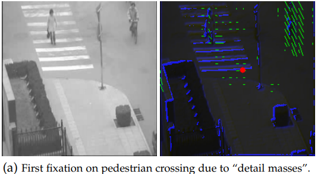
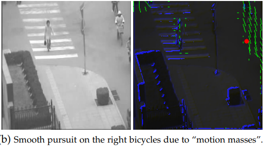
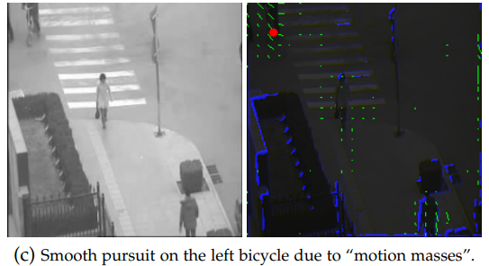

Gravitational Laws of Focus of Attention的粗略理解
在最近的项目中需要获得用于注视点渲染的scan path，除了自己手动标记以外，老师还提供了eymol来自动生成，除了直接使用作者提供的代码外，还是要粗略的了解一下这个方法背后的想法。
下面节选自
‘Zanca D, Melacci S, Gori M. Gravitational Laws of Focus of Attention[J]. IEEE transactions on pattern analysis and machine intelligence, 2019.’
The intuition is that, regardless of the information source, the “attraction of attention” is basically a gravitational process
直觉是，不管信息来源如何，“吸引注意力”基本上是一个引力过程
When trusting this principle, everything is reduced to modeling information sources as gravitational masses in the retina
按照这个标准，一切都简化为将信息源建模为视网膜中的重力块
Basically, for any pixel, masses are created which correspond with details and motion. The details are associated with masses proportional to the magnitude of the gradient, while masses that arise from motion turn out to be proportional to the magnitude of the optical flow.
对于像素点来说，质量是由细节和运动产生的。细节对于质量的影响与梯度的大小成正比，而运动对质量的影响与光流的大小成正比。(注:梯度为亮度的梯度)
The three frames reported in Fig. 1 present a typical example where details and motion are sources of attraction of the focus on the basis of classic gravitational laws of mechanics
在图一中的三帧是一个典型的例子，注意力源自基于经典的力学引力定律的细节和运动。

In (a), attention is on pedestrian crossing, which yields quite a remarkable magnitude of gradient.
在（a）中，注意力在人行斑马线上，它产生了很大的梯度。

In (b), the gravitational field gives rise to motion attraction (bicycles on the right),which comes from the correspondent virtual masses.
在（b）中，引力场引起运动吸引（右边的自行车处），其来自于相关的虚拟质量

Finally,in (c), motion attraction is moved to other virtual masses arising from motion (bicycles on the left).
最后，在（c）中，运动吸引移移动到另外一处虚拟质量升高地方（左侧自行车处）
When looking carefully at the mass distribution of subsequent frames (b) and (c), we can see that the virtual masses arising from the pedestrian crossing that were attracting attention in (a) are vanishing significantly so as to favor motion attraction in (b).Finally, as soon as the bicycles come out of the frame the attention shifts from (b) to the left cyclists (c).
当仔细观察在（b）（c）两个连续帧中质量分布的时候，在（a）中引起注意力的人行横道的虚拟质量显著的下降了，在（b）中的运动吸引也是一样。 当右侧的自行车行使出画面时，注意力立刻移动到了左侧的自行车处。
The idea behind inhibition is that as the saliency on a given region increases the correspondent mass is reduced, so as not to get trapped.The mass inhibition process can be regarded as the source of saccadic movements.
上述这种抑制背后的想法是，在显著性地方高的地方（注：也就是注意力经过的地方）降低相关的虚拟质量，这样注意力就不会被限制在一个地方。质量抑制过程可以看作是眼球快速运动的根源。
It is in fact the shift of virtual masses that originates ballistic gravitational movements, that mostly take place in areas without attraction masses.
实际上，质量的移动会引起的弹道引力运动，这种运动主要发生在没有质量的区域。
Appropriate fixations and smooth pursuit behaviour clearly benefit from damping, so as to suppress oscillations. The overall dynamics arises when pairing the gravitational equations with damping along with the inhibition model of the virtual masses.
显然阻尼中可以使得凝视和平滑追踪行为更适当，因为抑制了振动。 当将重力方程与阻尼以及虚拟质量的抑制模型配对时，将产生整体的动力。
We consider a video defined over the retinal domain $D=\mathcal{R} \times \mathcal{T}$, where $\mathcal{R} \subset \mathbb{R}^{2}$,is the retina while $\mathcal{T} \subset \mathbb{R}$ is
the temporal basis. The trajectory of the focus of attention is driven by a virtual mass $\mu: \mathcal{D} \rightarrow \mathbb{R}$ which yields a gravitational field associated with relevant visual features. This mass arises from the sum of different contributions. In this paper, we consider two different visual features as sources of virtual masses:
视频定义为$D=\mathcal{R} \times \mathcal{T}$，$\mathcal{R}$是视网膜区域（帧），$\mathcal{T}$是时间维度。 注意力的路径由虚拟质量$\mu: \mathcal{D} \rightarrow \mathbb{R}$定义，虚拟质量会产生引力场。虚拟质量由以下两个不同的视觉特征产生：
Let $b: \mathcal{D} \rightarrow \mathbb{R}$ be the brightness of the video. It generates the spatial gradient of the brightness $\mu_{1} = \alpha_{1}\left|\nabla_{x} b\right|$ with $\alpha_{1} \in \mathbb{R}^{+}$, so as the virtual mass $\mu_{1}(x, t)$ is available for all $(x, t) \in \mathcal{D}$. Clearly,$\mu_{1}(x, t)$ carries information about edges and, generally speaking, it reveals the presence of details in the video
$\mu_{1}$是亮度的梯度，可以代表视频的细节。细节产生的虚拟质量由 $\mu_{1} = \alpha_{1}\left|\nabla_{x} b\right|$ 计算。
Let $v: \mathcal{D} \rightarrow \mathbb{R}$,be the optical flow, that is the velocity
field at any $(x, t) \in \mathcal{D}$. It generates the virtual mass $\mu_{2}=\alpha_{2}|v|$,that characterizes moving areas in the retina.$v$代表光流，光流产生的虚拟质量由$\mu_{2}=\alpha_{2}|v|$计算。
In doing so, the focus of attention is either controlled by details, that are typically characterized by significant values of $\mu_{1}$ or by moving objects, that produce significant values of $\mu_{2}$. Basically, details and movements turn out to attract the correspondent virtual masses, so as the process of focus of attention is translated into gravitational attraction of attention. More generally, as we will point out in Section 4, the underlying idea of virtual masses can also be extended to the case in which attention is controlled by understanding processes. In this case, one can generate virtual masses by means of the visual features of a convolutional neural network.
如此一来，注意力会被细节或者运动所控制。本质上，细节和运动会吸引相应的虚拟质量，所以注意力可以被转换成一种引力机制。更笼统的说，虚拟质量这个想法可以被扩展到注意力被理解过程控制的情况（这在某种程度上与涉及人类视觉系统V1区域的特征图相对应）。如此一来，就可以用卷积神经网络生成视觉特征的方法来生成虚拟质量。（在第四节提到了基于语义基础生成虚拟质量，这样就可以用于Task-oriented modeling）